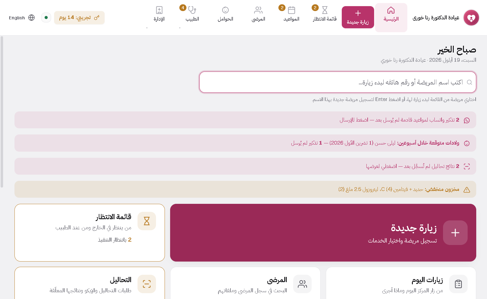
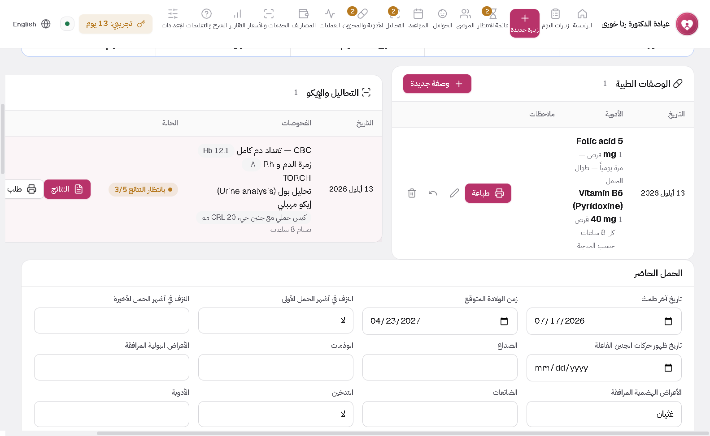
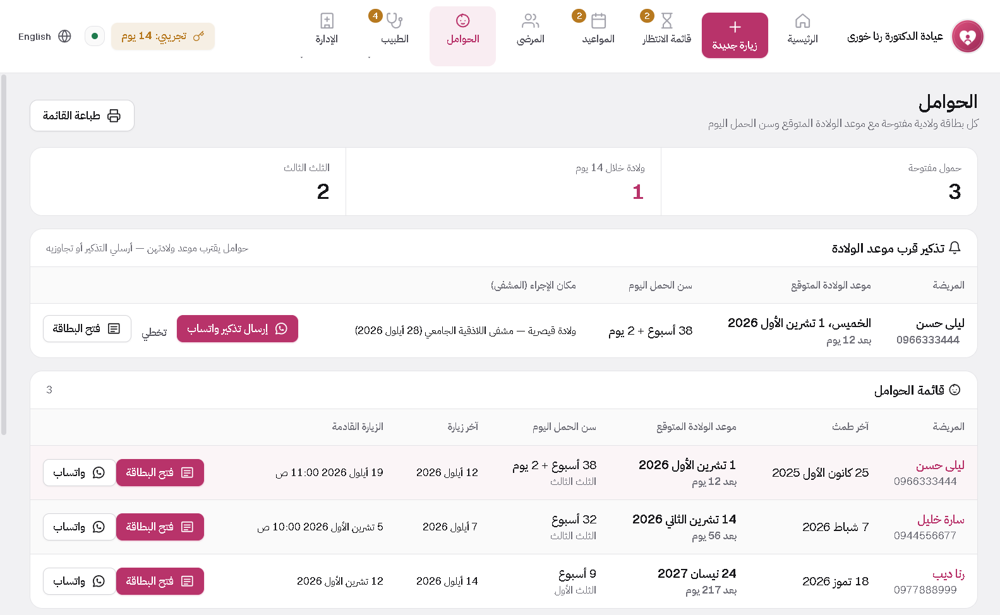
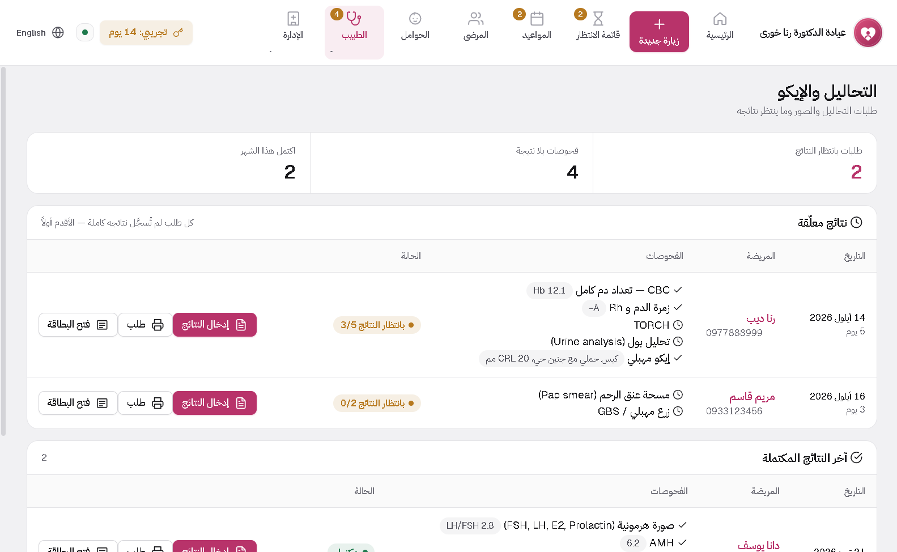
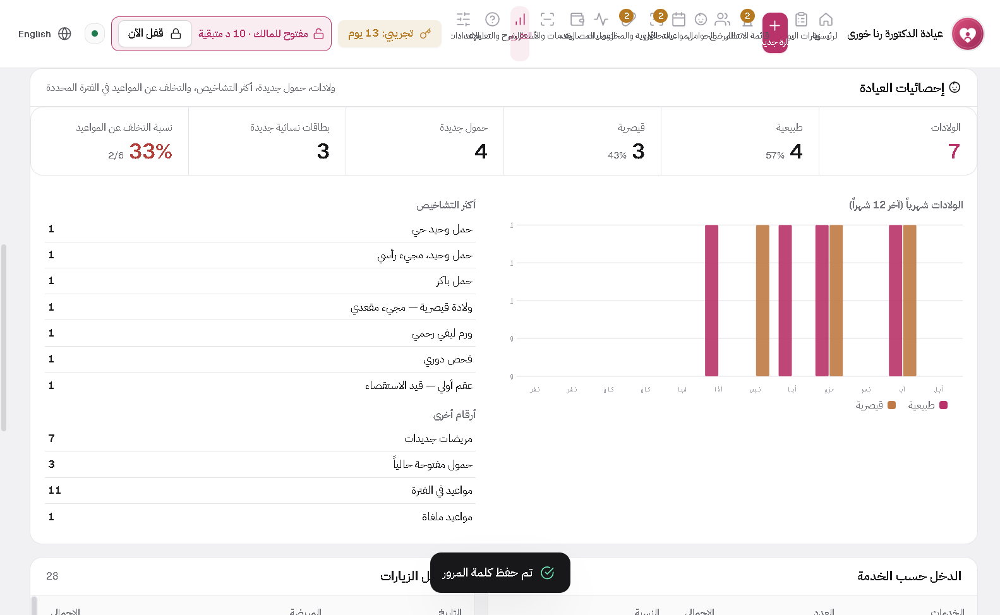

GynoDesk
The gynaecology and obstetric visit cards with the same fields as your paper form, plus pregnancy follow-up and automatic due dates.
Inside the program





What it does
Gynaecology and obstetric cards
The same fields as your paper: history, examination, diagnosis, management. Prints to A4 on your letterhead.
Pregnancy follow-up
Due date, gestational age and trimester are calculated from the last period and update daily.
Antenatal table and partogram
A row per visit, and the next visit books itself into the calendar. Labour, delivery and newborn details live in the same card.
Labs and ultrasound
Order from inside the visit; it stays pending until you enter the result, with a reminder for anything missing.
Prescriptions
Your drug list is saved with doses, and the prescription prints on clinic letterhead at A5.
WhatsApp reminders
Appointment or approaching-due-date reminders, pre-written with the patient name.
Installing takes two minutes
No technical experience needed. Download the file, run it, open the program.
Download the file
Press the download button on the product page. The file lands in your Downloads folder.
Run the installer
Double-click it. If Windows shows a warning, choose "More info" then "Run anyway".
Open the program
It asks for your clinic name, doctor name and logo, and it is ready to use.


Not sure which one fits?
Send a message with your specialty and I will reply personally.